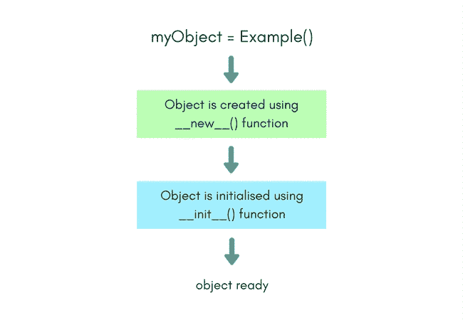

创建类对象的 Python 构造器
原文：https://www.studytonight.com/python/constructors-in-python
在上一个教程中，我们学习了如何创建一个类、它的实例以及如何访问类成员(变量和函数)。在本教程中，我们将通过学习更多关于课程的知识来提高我们对课程的理解。到目前为止，已知class关键字用于初始化一个类的定义，后跟该类的名称。用冒号结束第一行后，我们移动到下一行，并在提供适当的缩进后开始定义变量或方法。
什么是构造器？
正如在上一个教程中看到的，我们知道有两种方法可以声明/定义一个类的变量。
首先，通过简单地在类中定义它，甚至用一些值初始化它，然后在那里，非常像:
class Example:
myVariable = "some value";
第二种方法是在类的任何函数中使用self关键字声明它们。
此外，可以在声明变量时为它们赋值，但有时这些变量的值可能会因同一类的不同对象而异。在这种情况下，您必须在对象创建后为变量赋值。
同样，这可以通过两种方式实现。首先，通过直接从对象调用每个变量，使用点.符号，如:
>>> myObject.myVariable = "some other value";
或者我们也可以要求用户输入:
>>> myObject.myVariable = input();
除此之外，我们还可以使用self关键字分配/修改类函数中的变量值。
class Example:
def anotherFunction(self, parameter1):
self.myVariable = parameter1;
# or by calling for a user input
self.myVariable = input();
如果我们在类中定义了这样的函数，那么可以通过调用anotherFunction()方法并将所需的值作为参数传递给该方法/函数来初始化或重新初始化对象的变量。
>>> myObject = Example()
>>> myObject.anotherFunction("Amazing Spiderman")
>>> print (myObject.myVariable)
神奇的蜘蛛侠
可以看出，这是Example类中一个常用的用户定义函数，它利用参数来初始化变量。这里的概念相当简单。虽然，有更好的东西存在，它使用几乎相同的原则，是一个明确的标准。它被称为建造者。
构造器是一种特殊类型的函数，每当创建该类的对象时都会自动调用。例如，
>>> myObject = Example();
通过在上面的代码中写入Example()，我们通知 pythonmyObject是类Example的对象。这正是调用该类的构造器的时候。
但是它会做什么呢？一般来说，构造器用于初始化对象(实例)的类的变量，尽管它也可以执行一些其他任务，比如检查是否有足够的资源，用于初始化任何变量的值是否有效等。
在类中定义构造器方法
在 python 中，对象创建部分分为两部分:
- 对象创建
- 对象初始化
对象创建
对象创建由名为__new__的static类方法控制。因此当你调用Example()来创建类Example的对象时，这个类的__new__方法被调用。默认情况下，Python 为每个类都定义了这个函数，尽管您也可以显式地这样做，以玩转对象创建。
class Example:
def __new__(self):
return 'studytonight';
# creating object of the class Example
mutantObj = Example()
# but this will return that our object
# is of type str
print (type(mutantObj))
在上面的例子中，我们使用了__new__函数来改变返回对象的 tyoe，只是为了向您展示我们可以使用该函数做什么。
要了解默认的__new__函数是如何工作的，运行下面的代码，您会看到这次创建的对象是Example类型的
class Example:
myVariable = "some value";
simpleObj = Example()
print (type(simpleObj))
对象初始化
对象初始化由名为__init__的实例方法控制，该方法通常也称为构造器。虽然__new__和__init__一起组成了一个构造器。
一旦对象被创建，你可以通过在你的类中定义一个__init__方法来确保对象中的每个变量都被正确初始化，这意味着初始化。
因此，类名是什么并不重要，如果你想为这个类编写一个构造器(初始化你的对象)，它必须是__init__()方法。在这个函数中，你可以自由地声明一个类变量(使用self)或者初始化它们。下面是我们的Example类使用__init__方法的一个快速示例:
class Example:
def __init__(self, value1, value2):
self.myVariable1 = value1;
self.myVariable2 = value2;
print ("All variable initialized")
一旦你在一个类中定义了__init__方法，那么在创建一个对象的时候，当你调用Example()的时候，你可以提供对象的变量所需要的所有必要参数，因为当我们调用Example()的时候，场景后面的 python 会自动为创建的对象调用__init__函数。
这是代码的外观:
>>> myObj = Example("first variable", "second variable")
你可以用很多方法来初始化这个函数。上面已经提到了一种使用参数的方法，另一种方法是在构造器中请求用户输入。
def __init__(self):
self.myVariable1 = input();
self.myVariable2 = input();
下面我们有一个图表总结了这一切。
